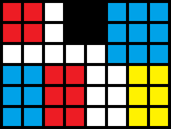
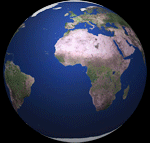

Formatos de imagen¶
Nota
PÁGINA EN CONSTRUCCIÓN.
Existen dos grandes tipos de formatos de imagen.
Las imágenes de mapa de bits también llamadas Raster, que están formadas por muchos puntos de color que conforman una fotografía o dibujo.
Las imágenes vectoriales están formadas por instrucciones que determinan la aparición de objetos como líneas, círculos, curvas de Bézier, etc. con las que se forman las imágenes.

Diferencia entre una imagen de mapa de bits (Raster) y una imagen vectorial (SVG).¶
Esquemas de color¶
Existen dos grandes esquemas de color, el aditivo y el sustractivo. Cada uno de ellos tiene un campo de aplicación distinto y es conveniente utilizar cada uno en su ámbito, para obtener los mejores resultados.

- Esquema de color aditivo RGB
Este esquema se denomina aditivo porque genera los diferentes colores añadiendo fuentes de luz.
Los colores primarios a partir de los que se forman todos los demás son el rojo (Red), el verde (Green) y el azul (Blue). De esos tres colores proviene el nombre RGB.
Este esquema de color se utiliza en monitores, pantallas de teléfonos inteligentes, tabletas, televisiones, proyectores, etc.
Este esquema funciona basándose en que el ojo humano tiene tres receptores de color (rojo, verde y azul) que utiliza para detectar todos los colores del arcoíris a partir de una combinación de todos ellos. Así nuestro ojo percibe el color amarillo como una combinación de luz roja más luz verde.
Los colores secundarios se forman sumando dos colores primarios:
Rojo + Verde = Amarillo
Rojo + Azul = Magenta
Verde + Azul = Cian
Rojo + Verde + Azul = Blanco
Ausencia de color = Negro
- Esquema de color sustractivo CMYK
Este esquema se denomina sustractivo porque genera los diferentes colores reflejando la luz blanca, que contiene todos los colores, menos algún color que se sustrae con una tinta. Por ejemplo la tinta amarilla reflejará toda la luz blanca que le llega, menos el color azul, que se sustrae o absorbe en el interior de la tinta.
Los colores primarios a partir de los que se forman todos los demás son el cian (Cyan), el magenta (Magent), el amarillo (Yellow) y el color negro (Key). Si las tintas fuesen perfectas, podrían conseguir el color negro sumando todas ellas (CMY) pero en la práctica resulta más sencillo y se ve más oscuro al utilizar una tinta específica para conseguir el color negro.
Los colores secundarios se obtienen mezclando tintas y por lo tanto absorbiendo más de un color. De los tres colores que tiene la luz blanca (rojo, verde y azul) la tinta amarilla absorbe azul y la tinta cian absorbe rojo. Al mezclar tintas amarilla y cian, se absorben el azul y el rojo, quedando solo el color verde como resultado final.
Este esquema se utiliza para la impresión de revistas, libros, folletos, carteles y todo tipo de trabajos de imprenta. También es la base de las impresoras a color y de las pinturas al óleo, acuarelas, ceras, etc.
Los colores secundarios se forman sumando dos colores primarios:
Cian + Magenta = Azul
Cian + Amarillo = Verde
Magenta + Amarillo = Rojo
Cian + Magenta + Amarillo = Negro
Ausencia de color = Blanco
Profundidad de color¶
La profundidad de color se refiere al número de colores distintos que puede mostrar una imagen. La menor profundidad de color es la de una imagen que solo trabaja con 2 colores (blanco y negro). La mayor profundidad de color es la de una imagen que trabaja con 16 bit para cada uno de los tres tonos RGB. Esto da como resultado un total de 281 billones de colores distintos. Las fotografías jpeg (las más habituales) utilizan una profundidad de color de 8 bit por cada tono RGB dando un resultado de 16 millones de colores distintos.
- Profundidad de color de 1 bit
2 colores.
Esta profundidad de color se utiliza para enviar fax, almacenar texto o dibujos sencillos. La ventaja que presenta es que ocupa muy poco espacio.

- Profundidad de color de 4 bit
16 colores.

- Profundidad de color de 8 bit gris
256 tonos de gris.

- Profundidad de color de 8 bit
256 colores.

- Profundidad de color de 8 bit RGB
16 millones de colores (256 tonos de rojo, de verde y de azul).

- Profundidad de color > 8 bit RGB
12 bit RGB = 68 mil millones de colores (4096 tonos de rojo, de verde y de azul).
14 bit RGB = 4 billones de colores (16384 tonos de rojo, de verde y de azul)
16 bit RGB = 281 billones de colores (65536 tonos de rojo, de verde y de azul).
Los esquemas con mayor número de colores que el de 8 bit RGB no presentan diferencias apreciables en una pantalla.
Cuando una imagen tiene más de 8 bit RGB se pueden realizar operaciones de edición de imágenes con menos pérdida de calidad que en las imágenes con menos colores, que no son apropiadas para las operaciones de edición.
Formatos de mapa de bits¶
Los siguientes formatos de imágenes de mapa de bits están compuestos por píxel o puntos de la imagen que se almacenan uno a uno en el archivo hasta completar la imagen.
- JPEG (JPG)
El formato JPEG (Joint Photographic Experts Group) creado en 1992, es un formato de archivo de imagen que se utiliza para almacenar fotografías en un formato comprimido. Este formato de archivo tiene pérdidas (es lossy), lo que significa que se pierde cierta cantidad de información de la imagen al comprimirla, especialmente en los pequeños detalles, generando un ruido llamado "artefactos". Por esa razón no es una buena opción para guardar imágenes de dibujos, texto, etc.

Fotografía almacenada en formato JPEG.¶
El formato de archivo JPEG se puede utilizar para almacenar imágenes en varios formatos de color, incluyendo RGB de 8 bit por color, CMYK y YCbCr. La profundidad de color de este formato (8 bit por cada color) hace que no sea una buena opción para editar fotografías. Para esa tarea es mucho mejor utilizar los formatos RAW de cada cámara fotográfica que llegan a tener 36 o 42 bit por pixel.
El formato JPEG no permite definir transparencias en la imagen por lo que no es una buena opción para insertar imágenes recortadas.
- PNG
El formato PNG (Portable Network Graphics) fue creado en 1995 como un formato de imagen de compresión sin pérdidas, es decir, que no pierde ningún detalle durante la compresión de la imagen.
El formato PNG es ideal para almacenar imágenes de dibujos o texto ya que al no tener pérdidas se almacenarán sin ruido o "artefactos".
Imagen PNG de una cuadrícula coloreada.¶
Este formato también es ideal para imágenes con un fondo transparente, ya que cada píxel puede ser almacenado junto a un código de color transparente que evita que se noten los bordes.
Si bien se puede utilizar para guardar fotografías, no es aconsejable porque, al no tener pérdidas, su tamaño es mucho mayor que el de las imágenes JPEG. Si lo que se desea es guardar una fotografía sin pérdidas para poder editarla, es preferible utilizar el formato TIFF.
El formato PNG puede guardar las imágenes con diversas profundidades de color adaptadas a cada aplicación. Con los colores blanco y negro se pueden almacenar imágenes de texto o similares con un nivel de compresión muy alto. También se pueden almacenar imágenes en escala de grises o imágenes con todo el color (RGB de 8 bits por color).
El formato PNG no permite almacenar colores CMYK adaptados a la impresión en papel.
- GIF
El formato GIF (Graphics Format Interchange) fue lanzado en 1987 por CompuServe y es ampliamente utilizado en internet tanto en imágenes como en animaciones debido a su amplio soporte y compatibilidad.
Como característica especial, este es el único formato popular que puede guardar imágenes en movimiento o animaciones. Los vídeos con imágenes fotográficas aparecen con una gran pérdida de color debido a que este formato solo puede manejar una paleta de 256 colores, pero esto no ha impedido que sea muy utilizado.
El formato GIF permite guardar dibujos con transparencias, pero con peor calidad que con el formato PNG de 24 bits.
La aplicación principal del formato GIF es almacenar pequeños dibujos y animaciones con o sin transparencia.
Zaqwerdx, CC BY-SA 3.0, via Wikimedia Commons.¶
- TIFF
El formato TIFF (Tagged Image File Format) se publicó en su versión 6 en 1992 y tiene un gran uso en la industria gráfica y en la fotografía profesional por su versatilidad y compresión no destructiva.
Es un formato que ocupa mucha memoria cuando almacena fotografías sin pérdidas, especialmente si se utiliza una gran profundidad de color, con 16 bit por cada color. Sin embargo estas características hacen que el formato TIFF sea muy apreciado en edición fotográfica profesional y fotografía científica.
- RAW
- El formato RAW.
- Resumen de los formatos de imagen de mapa de bits.
Formato Compresión Pérdidas Color Transparencias Movimiento JPG Si Si RGB 8 bit
CMYK
No No PNG Si No 256 colores
RGB 8 bit
RGB + Transparencia
Si No GIF Si No Solo 256 Colores Si Si TIFF Si No RGB de 8 bit
CMYK
No No RAW No No RGB de 12 bit No No Formato Tipo de imagen JPG Fotografías. PNG Dibujos. GIF Dibujos.
Imagenes con movimiento.
TIFF Fotografía profesional.
Fotografía científica.
Impresión en papel.
RAW Fotografía profesional.
Comparativa entre formatos JPEG y PNG¶
En las siguientes imágenes podemos comprobar las diferencias y la utilidad de cada uno de los formatos de imagen.
A la hora de guardar textos o imágenes de dibujo, siempre será mejor utilizar el formato PNG que ocupará menos tamaño dando mejor calidad.
Archivo de imagen PNG de 6kb de tamaño.¶
Archivo de imagen JPEG de 7kb de tamaño, con "artefactos".¶
A la hora de guardar fotografías, siempre será mejor utilizar el formato JPEG que ocupará menos tamaño dando una calidad semejante. En realidad la calidad del formato JPEG será menor, pero no se apreciará a simple vista.
Archivo de imagen PNG de 262kb de tamaño.¶
Archivo de imagen JPEG de 52kb de tamaño.¶
Formatos vectoriales¶
Los formatos de imágenes vectoriales están compuestos por vectores, que son instrucciones matemáticas que se le dan al navegador o a programas de edición de estos gráficos para que se puedan visualizar. Estas imágenes se pueden escalar de manera infinita sin perder resolución o calidad.
- SVG
El formato SVG (Scalable Vector Graphics) es un estándar abierto publicado en 1999 para definir imágenes en dos dimensiones para la Web.

Stephen Winsor, GNU General Public License v3, via Wikimedia Commons.¶
- EPS
- EPS